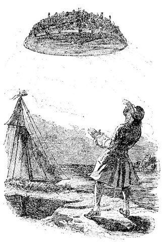

|
 | |
|
What makes a group of people adept at finding out what is actually the case? This is one of the questions investigated in the field of social epistemology. Due to its involvement of many agents, each of potentially arbitrary complexity, social epistemology poses special problems for philosophers and sociologists. Laputa is a program designed to help in these kinds of research. It allows you to design society structures, involving inquirers with different types of | |
|
© 2011 by the Department of Philosophy, Lund University and the author(s). |